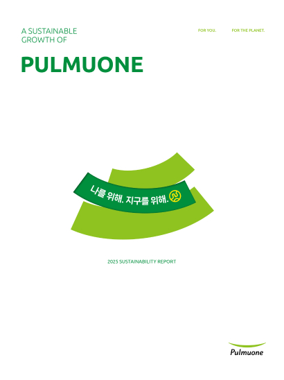

Part 1.
풀무원의 지배구조와 사업 영역, ESG 경영 체계를 소개합니다.
풀무원의 주요 보도자료와 공지 정보를 확인해보세요.
2008년 5월부터 2016년 6월까지 보도자료는 풀무원 블로그에서 확인하실 수 있습니다. + 더보기
풀무원은 2007년 지속가능경영보고서 발간을 시작으로 통합보고서 체계를 도입하여
재무·비재무 성과와 주요 ESG 이슈 대응 현황을 종합적으로 공개해 왔습니다.

풀무원의 지배구조와 사업 영역, ESG 경영 체계를 소개합니다.
핵심 ESG 이슈와 주요 활동 및 성과를 소개합니다.
환경·사회·거버넌스 분야의 일반 이슈와 주요 활동을 소개합니다.
주요 재무·비재무 성과의 최근 3개년 추이를 정량 데이터로 제공합니다.
공시기준 인덱스와 주요 데이터의 제3자 검증 결과를 제공합니다.
| 명칭 | 발간연도 | 작성기준 | 구성 및 내용 |
|---|---|---|---|
| 지속가능경영보고서 | 2007~2013 | GRI 가이드라인 | 풀무원의 사회책임경영 활동과 실적 소개 |
| 통합보고서 | 2015~2024 | GRI·IR 프레임워크 | 재무·비재무 성과 통합 |
| 지속가능경영보고서 | 2025 | KSSB S1 | 중대한 비재무 이슈 보고 |
이해관계자 여러분께서 풀무원의 비즈니스 현황을 보다 쉽고 빠르게 파악하실 수 있도록 향후 풀무원 브로슈어는
통합보고서의 요약 버전이 아닌 별도의 발간물로 제작될 예정입니다.


풀무원의 지속가능한 성장과 주요 활동을 소개합니다.
풀무원의 지속가능한 성장과 주요 활동을 소개합니다.
풀무원의 지속가능한 성장과 주요 활동을 소개합니다.
풀무원의 지속가능한 성장과 주요 활동을 소개합니다.
풀무원의 지속가능한 성장과 주요 활동을 소개합니다.